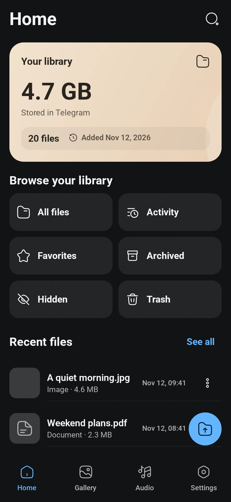

A LITTLE ORDER
Files, minus the digging.
Folders, search, favorites, Archive and Trash.
Familiar tools
for a library that feels like yours.
YOUR TELEGRAM. A LITTLE MORE ORGANIZED.
All the photos, files and songs that matter.
One calm place to keep them — in your own
private Telegram channels.
Free to use Android 8.0+ Source on GitHub
Latest release on GitHub
A real app preview. Sample files.
LESS LOOKING. MORE FINDING.
Give everything its own place.
Then get back to enjoying it.
Folders, search, favorites, Archive and Trash.
Familiar tools
for a library that feels like yours.
A gallery for photos and videos. Upload originals, browse albums, and back up selected folders.
Made for your originalsStream music and video, enjoy available artwork, and follow embedded lyrics when a track includes them.
Device authentication for Hidden. Optional file encryption. Your private channels, with controls you can understand.
How your data is handledFEELS FAMILIAR. FITS EVERYTHING.
Browse a real preview of TeleDrive.
No account needed to take
a look.
Your library overview, recent files and the collections you reach for most. Everything starts here.
Screens captured from the Android app with sample data.
Gallery
and music artwork depend on the files in your library.
YOUR TELEGRAM, UNDERNEATH IT ALL.
Normal uploads go straight from your phone
to the private
Telegram channel you choose.
Telegram cloud chats are not end-to-end encrypted by default. TeleDrive offers optional file encryption; keep your recovery material safe. Telegram limits and server-requested waits still apply. Read how it works
MAKE A LITTLE ROOM.
Download one APK. Sign in with Telegram.
Make yourself at
home.
Latest release on GitHubAndroid 8.0 or newer
The recommended download for most modern Android phones and tablets.
tg-drive-arm64-v8a.apkDownload ARM64
Choose this if your phone runs a 32-bit ARM system. Android 8.0+ is still required.
tg-drive-armeabi-v7a.apkDownload ARM32
Just an APK. No ZIP extraction or split installer.
Release notesCompare the SHA-256 of your APK with its published release digest.
Open your APK from Downloads. If Android asks, allow your browser or file manager to install it, then tap Install.
Use your Telegram phone number and follow its verification steps. Official releases include the app’s API identity.
Choose or create a private storage channel, then upload files or set up the backup folders you want.
Already using TeleDrive? Install the newer release over your current version. Keep the same app data and signing identity.
In the private Telegram storage channels you choose in TeleDrive. The app uses TDLib to connect to Telegram and keeps a local index so you can browse your library.
Deleting a storage channel or its file messages in Telegram can remove the underlying files. Keep a separate copy of anything important.
TeleDrive is free to use and does not sell a separate cloud-storage plan. Storage is provided by Telegram and remains subject to its account, file-size and service limits. No app can remove Telegram’s server-requested waiting periods.
Original-file uploads keep the original files rather than sending compressed chat photos. Folder backup follows your chosen network, charging and exclusion preferences. Android may defer background work.
The official release APKs include TeleDrive’s Telegram application identity, so normal sign-in starts with your phone number. Telegram decides how verification codes are delivered and may ask for your two-step password or other account checks. Debug builds can still use manual API setup.
Enable Lock Hidden in Settings → Security, or open Hidden → ⋮ → Hidden settings. It uses your phone’s fingerprint or screen lock. Enabling and disabling both require confirmation; cancelling leaves the setting unchanged.
A secure phone lock must be set up. Hidden lock controls access inside TeleDrive; optional file encryption is a separate setting.
ARM64 is the usual choice for modern Android phones. Devices running a 32-bit ARM system need ARM32 (armeabi-v7a). Both require Android 8.0 or newer. These releases do not include an x86 or universal APK.
This project currently publishes Android APKs only. There is no iOS or desktop download on this website.
No. TeleDrive is an independent project, not made by or affiliated with Telegram. You can review the project’s source, dependencies and implementation notes on GitHub.
YOUR FILES. YOUR SPACE.